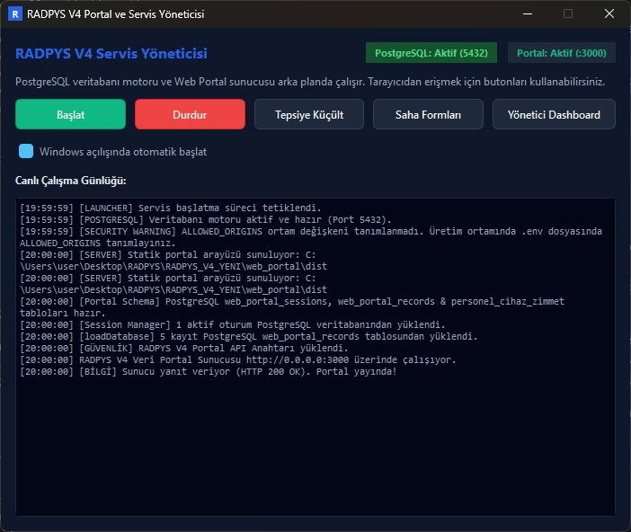
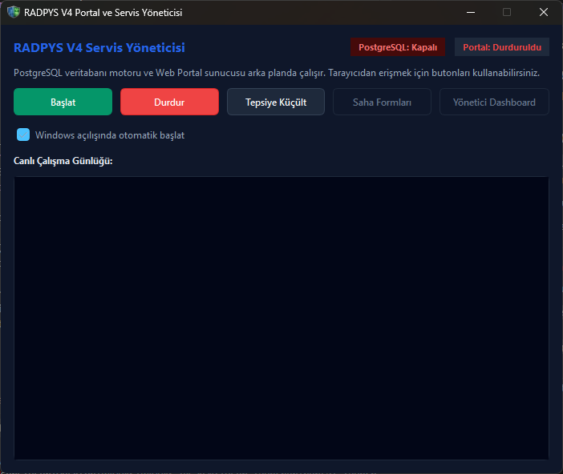
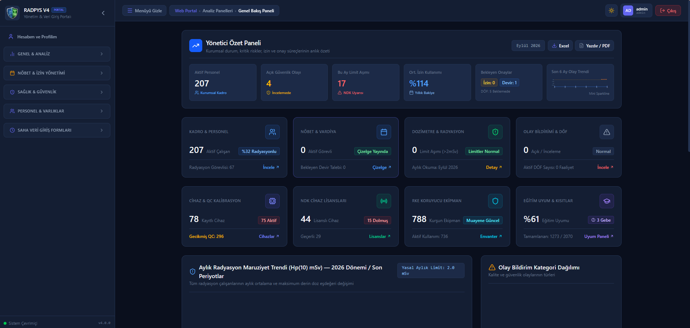

Web Portalı ve Yönetici Gösterge Panelleri
Kurum içi personel ve saha işlemlerini (izin, nöbet devri, EK-1 sağlık/RD.F43 beyanı, cihaz arıza-bakım-QC, RKE QR muayenesi ve ortam dozu ölçümü) mobil uyumlu tarayıcı ve PWA arayüzüne taşırken; 3 ana gruptaki 18 aktif yönetici gösterge panelini bellek içi önbellek, canlı veri tazeliği göstergesi, 8 saniyelik canlı sağlık denetimi ve isteğe bağlı şifreli dış erişim tüneliyle sunar.
Kısa Reçete: Portal Servisini Kontrol Etme ve Yönetici Paneline Erişim
Masaüstü uygulamasından veya Portal Servis Yöneticisinden Web Portalını doğrulayıp 18 analitik gösterge paneli ile saha QR işlemlerine anında bağlanmak.
Masaüstü durum çubuğunda [Portal Sunucu: Aktif] göstergesini kontrol edin (kapalıysa tıklayarak başlatıcıdan [Başlat] deyin), ardından sol üstteki [Genel Bakış] butonuna basın.
Varsayılan tarayıcınızda Yönetici Özet Paneli açılır; 60 saniyelik bellek içi önbellek eşzamanlı sorgularda veritabanı yükünü dengeler, sağ üstte son veri çekim saati görülür ve istenen anda [Yenile] ile canlı veri çekilir.
5N1K Kural ve Arayüz Çözümleme Tablosu
Masaüstü köprü ve başlatıcı denetimi, önbellek ve veri tazeliği, 18 yönetici paneli, dış erişim güvenliği, saha QR ve PWA kuralları.
Kritik Sahada Yanlış Bilinen Kurallar (Mit Avcısı)
Süreç Akış Şeması
- Servis Denetimi: Masaüstü uygulaması 8 saniyede bir portal durumunu kontrol eder; kapalıysa Servis Yöneticisi üzerinden yerel sunucu ve varsa şifreli tünel ayağa kaldırılır.
- Güvenli Oturum: Kurum içi ağda hızlı oturum açılırken dış erişimde robot doğrulaması ve 6 haneli tek kullanımlık e-posta doğrulaması uygulanır.
- Analitik ve Saha İşlemleri: Yetkisine göre yöneticiler 18 gösterge panelinde (60 sn önbellekli ve veri tazeliği göstergeli) anlık Excel/PDF analizine ulaşır; personel ve teknisyenler karanlık oda fenerli QR okuyucu ve mobil formlarla sahadan kayıt girer.
Arayüz Ekran Görünümleri




Adım Adım İşlem Rehberi
1. Portal Servisini Başlatma ve Durum Kontrolü
- Masaüstü programının sağ alt köşesindeki [Portal Sunucu: Aktif] göstergesini kontrol edin; gösterge Kapalı görünüyorsa butona tıklayarak RADPYS V4 Portal ve Servis Yöneticisi penceresini öne getirin.
- Yönetici penceresinde [Başlat] butonuna basarak veritabanı motoru ile portal servisinin (gerekirse dış erişim tünelinin) aktifleşmesini bekleyin ve pencereyi küçültmek için [Tepsiye Küçült] seçeneğini kullanın.
- Doğrudan tarayıcıyı açmak için başlatıcıdaki [Web Portalı Aç] butonuna veya masaüstü sol menüsündeki [Genel Bakış] düğmesine tıklayın.
2. 18 Yönetici Gösterge Panelinde Analiz ve Raporlama
- Sol menüdeki GENEL & ANALİZ (4 pano), NÖBET & İZİN YÖNETİMİ (5 pano) ve SAĞLIK & GÜVENLİK (9 pano) gruplarından ilgili panoyu seçin (veya üst çubuktan
Ctrl+Khızlı arama ile Şua, Farazi İzin ya da Kısıt alt görünümlerine doğrudan atlayın).- Üst Yönetim ve Denetim Kolaylıkları: Genel Bakış ekranında 4 hücreli yönetici özet şeridi, 3 modlu birim grafiği ile Acil / Geciken ve Yaklaşan (30 Gün) uyarı sekmelerini inceleyebilir; Denetim Panosu ekranında birim bazlı kanıt özetlerini, acil aksiyonları, Mevzuat & Denetim Rehberi sekmesini ve tek tıkla [Denetim Paketi (PDF)] toplu kanıt çıktısını kullanabilirsiniz.
- Birim Yük ve Personel Matrisi: Birim Yük / Oran Paneli ekranında cari yıl seçimiyle 1+3 düzenindeki Yatay Barometre, Karşılaştırma Grafiği ve Ana Departman Gruplu görünümlerini inceleyebilir (sekreterlik ve arşiv gibi destek birimleri tek İdari & Destek Birimleri (Sekreterlik / Arşiv) satırında özetlenir); Personel & Birimler ekranında ise iki ondalıklı doz gösterimini, Ünvan & Branş Dağılımı özetini ve tıklandığında ilgili birim listesini açan Klinik Birim Matrisi yapısını kullanabilirsiniz.
- Nöbet & İzin Yönetimi Panoları (Faz 4): Nöbet Yönetimi ekranında kurumsal matris, birim çizelgesi, dini ve resmi bayram ayrımlı Adalet Sayacı, 12 aylık Borç/Alacak Matrisi ve Birim × Kural Çapraz İhlal Matrisi sunulur; Nöbet Devir & Takas Analitiği karşılıklı takasların her iki vardiya ayağını, 3 aşamalı onay ve yanıt sürelerini, aşırı devir uyarılarını ve saha Değişim/Onay Merkezine doğrudan geçişi izler; Nöbet Kısıt & İstek Analitiği eğitim/ders günü kısıtları, nöbet yaz/yazma mazeretleri ve fazla mesai tercihlerinin çizelgeye gerçekleşme ve ihlal durumunu 7 günlük birim yoğunluğu ile yaş/kıdem muafiyetleri eşliğinde analiz eder; Aylık Mesai & Tatil Cetveli artık yıl duyarlı yıllık mesai hesabını, 2027–2030 Diyanet dini bayram/Arife yarım günlerini ve çakışan tatil tekilleştirmesini gösterir; İzin & Hak Ediş Yönetimi ise Birim İzin Matrisi, İzin Hareketleri, yıl sonu yanma riskini izleyen Yıllık & Şua Bakiye Karnesi ve KVKK maskelemeli Farazi İzin Projeksiyonu sekmelerini tek çatı altında birleştirir.
- Sağlık & Güvenlik Panoları (Faz 2 & Faz 3): Dozimetre Takibi (yıllık ALARA Doz Bütçesi ve özel izlem radarı dahil), Olay Bildirimi & DÖF (yanıt süresi ve kök neden dağılım analizi dahil), NDK Araştırma Formları (Çalışan Beyanı / RKS süreç kapıları, 15 günlük yasal süre geri sayımı ve panelden ilgili RD.F43 formuna tek tıkla geçiş), Sağlık Muayene, Çalışma Kısıtları (hizmet sınıfı ile radyasyon kapsamı ayrımı, radyasyonlu birim alan kısıtı uyarısı, tek-ekran önlem özeti, ileri tarihli planlanan fazlar ve kadro muafiyeti ayrımı), Cihaz & QC Yönetimi (zimmet sekmesiyle birleşik), RKE & KKD Muayene, Ortam Dozu Trendi (ölçüm cihazı lisans/kalibrasyon takibi dahil) ve Zorunlu Eğitim Uyum panellerinde yıllık ısı haritaları, Personel × Eğitim matrisi ve güvenli sertifika önizleme imkanı sunulur.
- Üstteki dönem ve birim filtrelerini uygulayın; sağ üstteki Veri Tazeliği Göstergesi verinin en son ne zaman çekildiğini gösterir, son 60 saniye içinde yeni bir veri girişi yaptıysanız önbelleği beklemeden taze veri çekmek için [Yenile] butonuna tıklayın.
- Denetim veya toplantı sunumu için sağ üstteki [Excel], [Yazdır / PDF] ya da Denetim Panosu'ndaki [Denetim Paketi (PDF)] butonlarından tabloyu ve özet metrikleri dışa aktarın.
3. Mobil Saha İşlemleri, PWA Kurulumu ve Karanlık Oda QR Kullanımı
- Telefon, tablet veya bilgisayarda tarayıcı üst çubuğundaki [Uygulamayı Yükle] butonuna basarak Web Portalını tam ekran uygulama (PWA) olarak kurun (iOS cihazlarda ekrandaki Paylaş ve Ana Ekrana Ekle yönergesi açılır).
- Sol menüdeki Kişisel İşlemlerim, Nöbet İşlemlerim ve Saha & Güvenlik Bildirimleri altından izin talebi, nöbet takası/havuzu, Profilim içi EK-1 sağlık / RD.F43 doz beyanları ile Cihaz, RKE ve Ortam Dozu saha merkezlerini açın. Cihaz, RKE ve Ortam Dozu ekranlarında yalnızca görevli olduğunuz birimler üzerinden seçim veya QR taraması yaparak pasaport kartı ve alt sekmelerden (esnek arıza tarihçesi, kroki pinleme, askılık sayımı ve nokta bazlı ölçüm geçmişi) kayıtlarınızı onaya gönderin.
- Çekim odasında QR kod taratırken tarayıcı kamerasındaki fener düğmesiyle alanı aydınlatın; uzun formlarda sayfa kapansa dahi tarayıcı taslağının korunduğundan emin olarak işleminizi güvenle tamamlayın.
Sıkça Sorulan Sorular (SSS)
Portal sunucusunu herkes başlatabilir veya durdurabilir mi?
Hayır. Kurumsal güvenlik politikası gereğince arka plan portal servisini başlatma, durdurma ve tünel ayarlarını yönetme yetkisi yalnızca Sistem Yöneticisi (Admin) rolüne aittir; diğer yetkili kullanıcılar açık portalda kendi modüllerini kullanır.
60 saniyelik önbellek yüzünden yeni girdiğim kayıt görünmezse ne yapmalıyım?
Yönetici panellerinin sağ üstünde yer alan [Yenile] butonuna basmanız yeterlidir. Bu işlem 60 saniyelik bellek süresini beklemeden doğrudan güncel veritabanı sorgusunu çalıştırır.
İnternet kesildiğinde Web Portal ve mobil QR okuyucu çalışmaya devam eder mi?
Evet. Hastane yerel ağı (intranet) üzerindeki tüm gösterge panelleri, personel formları ve QR saha işlemleri kurum sunucusu üzerinde çalıştığı için dış internet kesintisinden etkilenmez.
Web Portalındaki bazı ekranlar dar telefon penceresinde neden alta kayıyor?
Dar mobil veya uygulama pencerelerinde hiçbir sekmenin ekran dışında kesilip gizlenmemesi için sekmeler otomatik olarak alt satıra dizilir ve tüm onay pencereleri dokunmatik ekrana uyumlu açılır.